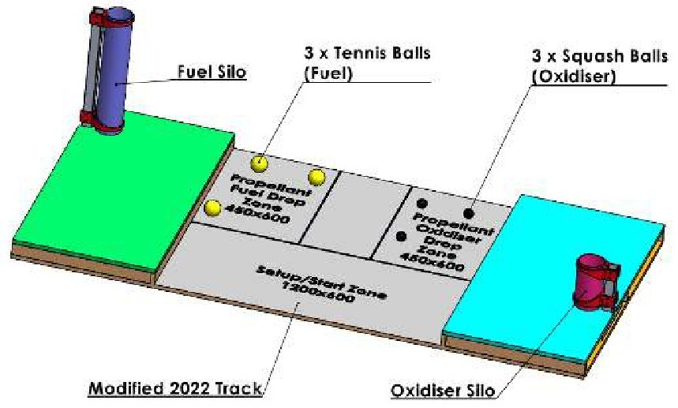
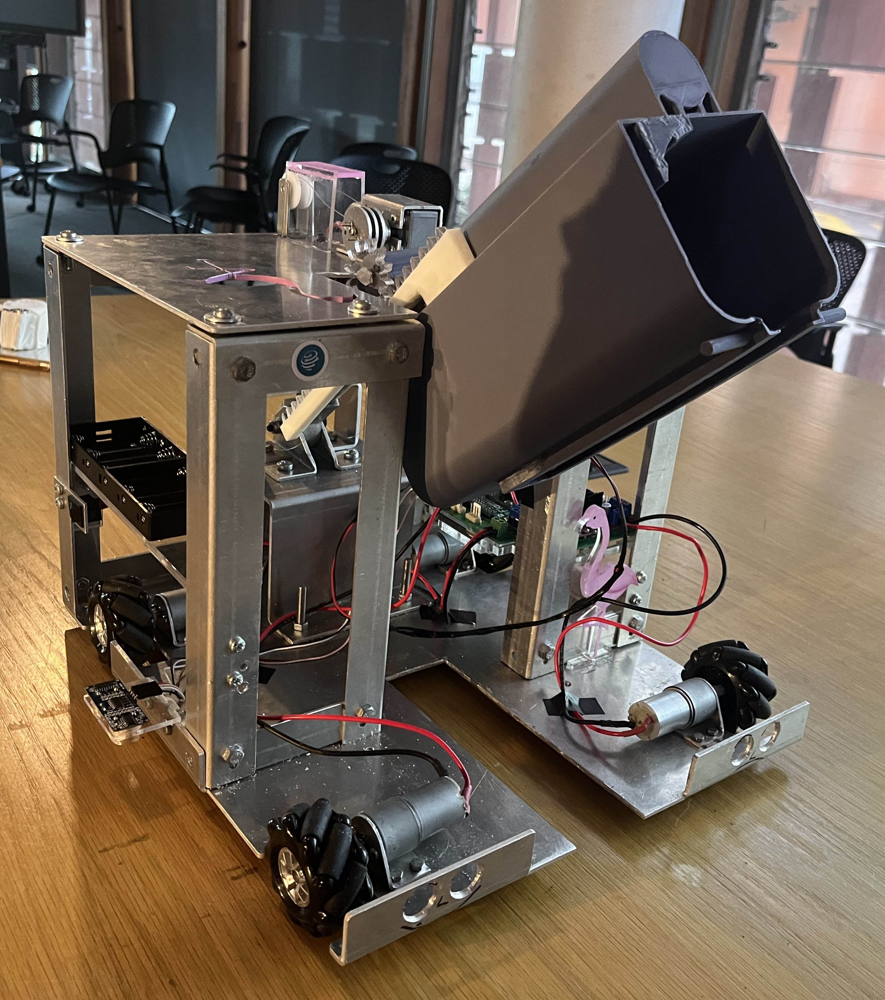
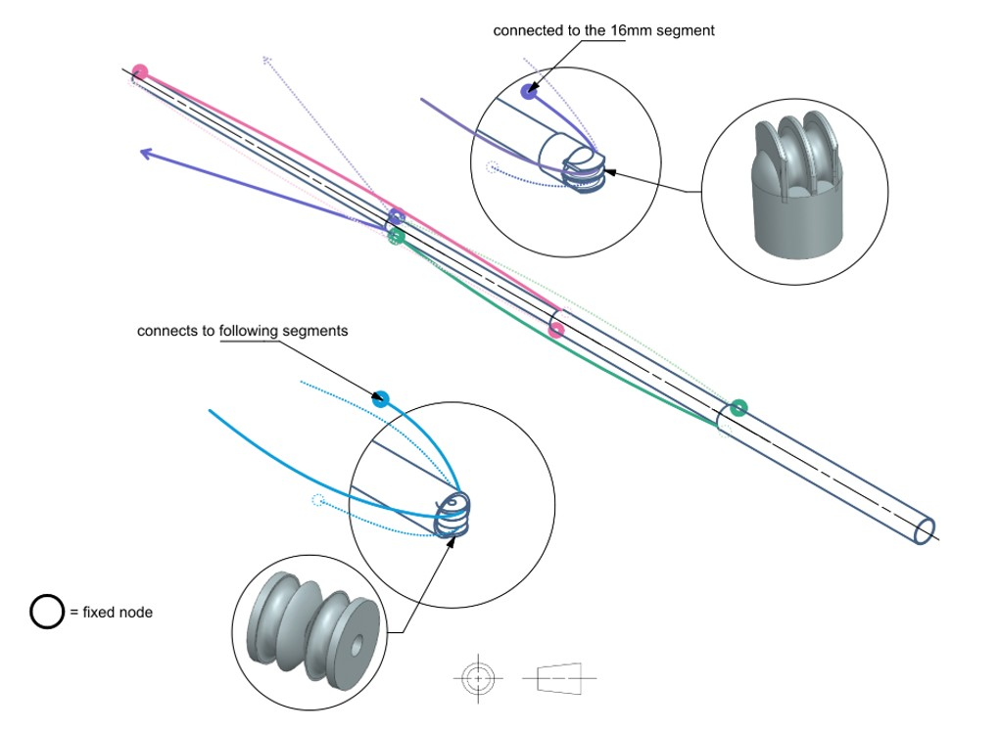
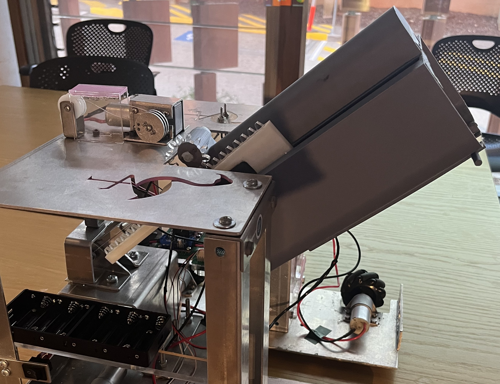
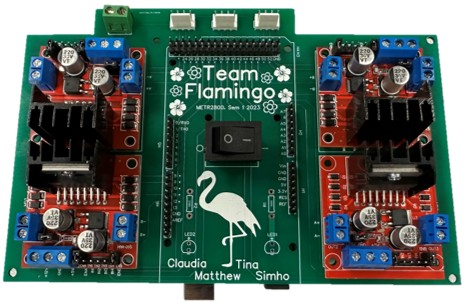

Engineering Project Portfolio
Tina (Shuting) Zheng
A small collection of my favourite projects as a final-year BE/ME Mechatronics student at UQ
Autonomous Vessel Collection and Deposit Prototype
METR2800 Version
Final Mark: High Distinction
Duration: February 2023 - June 2023
Key skills: CAD • Arduino IDE (C/C++) • Electronics • Project management • Manufacturing Techniques
This project began as a course project for the Mechatronics System Design Project I (METR2800), and involved the design and development of an autonomous system that can collect fuel vessels (tennis balls) and oxidiser vessel (squash balls), and depositing each in their respective silos without simultaneous contact with different types of vessels. Although this was the first hands-on robotics project my three team members and I had ever undertaken, we were able to achieve the the best performance of the 2023 METR2800 cohort, allowing us to represent UQ in the International Finals of the Warman Design & Build Challenge.


The main engineering challenge of my subsystem, the mechanical subsystem, was developing a pulley system capable of extending the robot’s arm from 380 mm to 980 mm, allowing it to meet the initial 400 × 400 × 400 mm size constraint while still reaching the maximum silo distance without driving onto the raised platform of the rig. This was completed with a cylindrical pulley system made out of lightweight PVC pipes, aluminium rods, and 3d-printed connections, designed and manufactured by myself.


This design also utilised the following components:
- Meccanum wheels for omnidirectional mobility
- Arduino Mega microcontroller
- Worm gear and reversible DC motors
- Ultrasonic distance sensors for closed-loop system implementation
- Manufactured acrylic rack and pinion linear actuation mechanisms
Although the performance of this robot was suboptimal, collecting 6 balls but only depositing 5 in just over a minute, it was important to experience the Design → Implement → Validation process.
The project also equipped me with new skills:
- CAD Modelling: Siemens NX, Autodesk Inventor, and AutoCAD
- Mechanical Design & Analysis: designing lightweight, functional mechanisms under space and power constraints
- Manufacturing Techniques: acrylic and fibre laser cutters, press brake machines, and 3D printing
- Electronics & Assembly: soldering, circuit assembly, and hardware troubleshooting
- Programming: Arduino IDE (C/C++)
- Project Management & Documentation: Gantt charts, risk analysis, and project management plans
